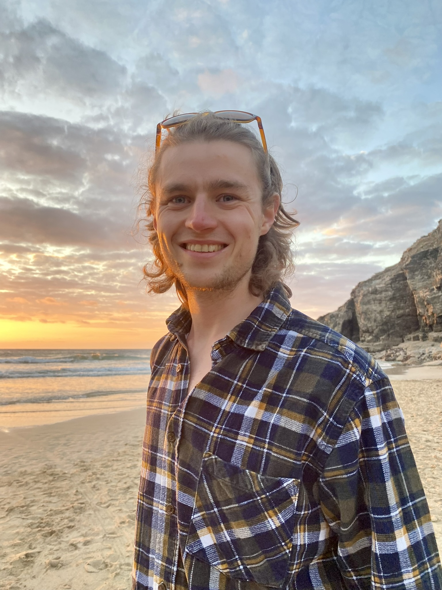
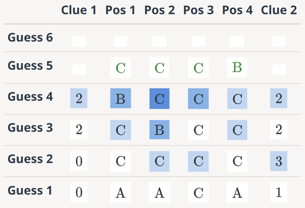
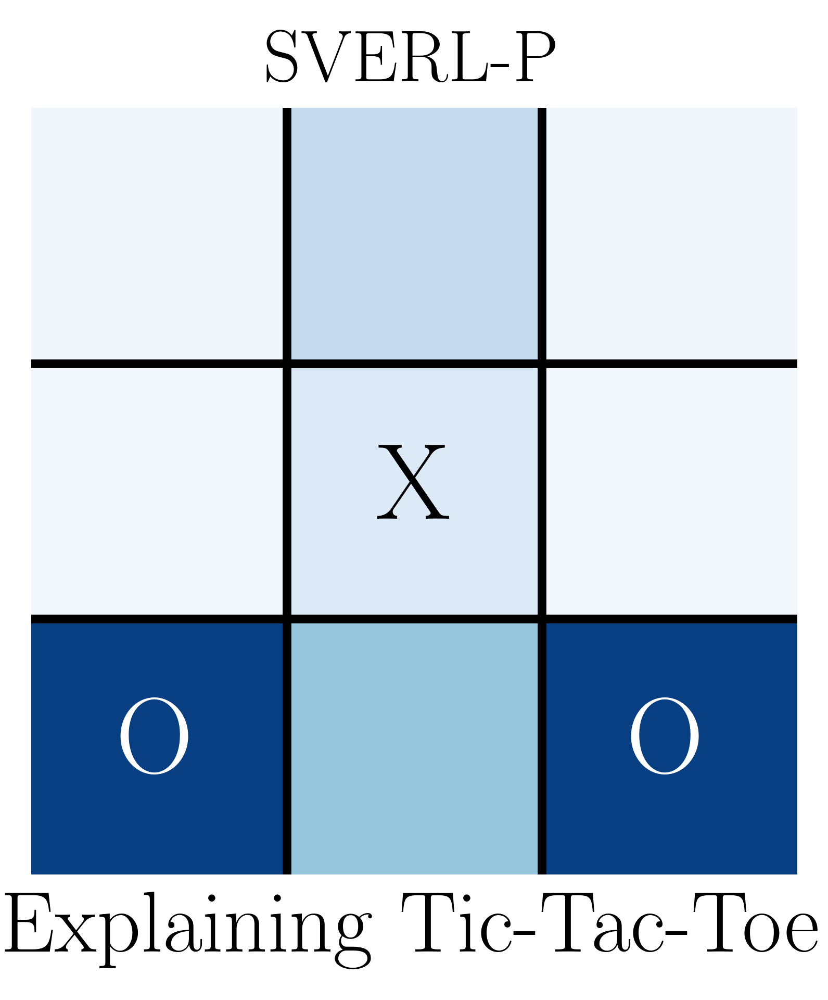
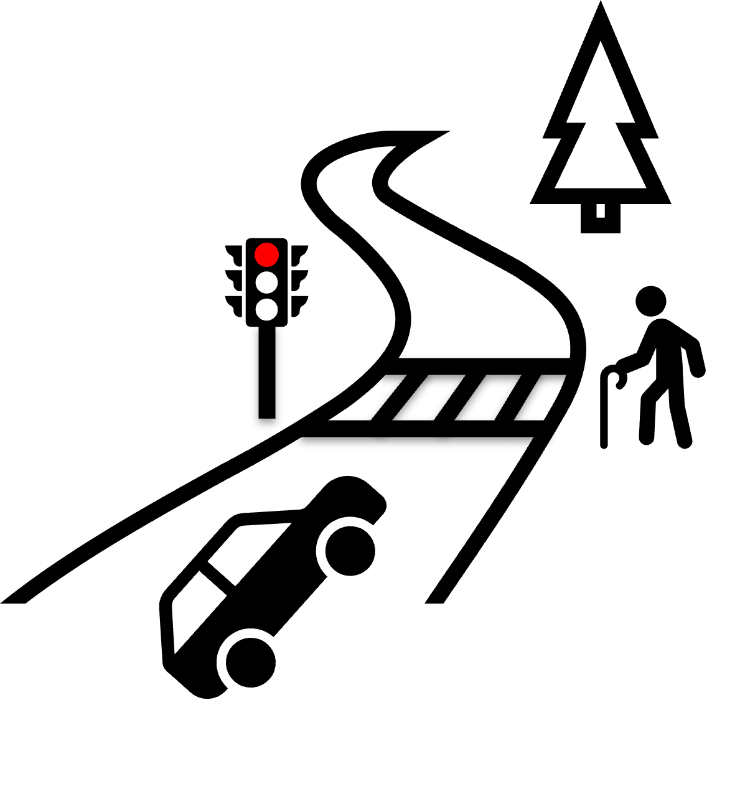
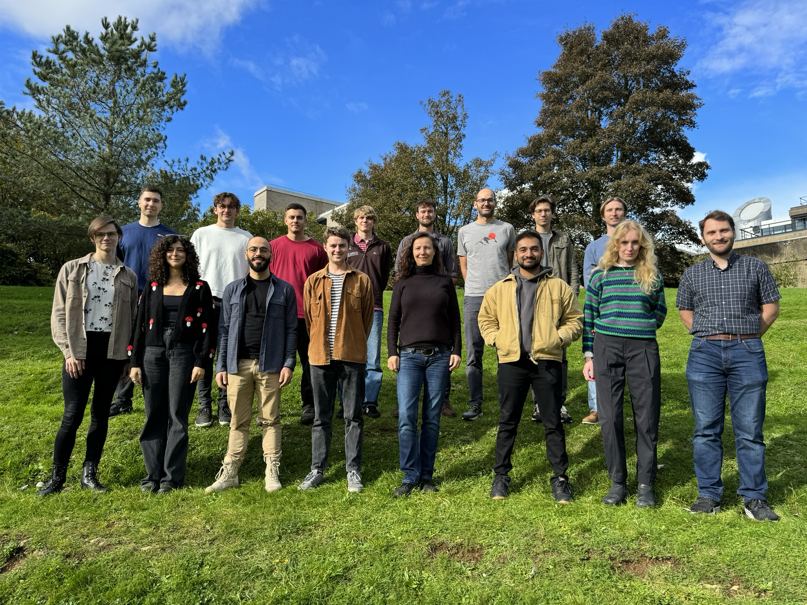

Researcher at H Company, using RL to train computer-use agents. Previously a research scientist on the AI Agents team at Huawei's Noah's Ark Lab, with a PhD on explainable RL from the Bath Reinforcement Learning Lab.
Interests
I'm interested in all things reinforcement learning. Currently, I'm focusing on building LLM-based agents that continuously learn by setting, pursuing, and verifying their own goals (2025).
Previously, I studied how to explain reinforcement learning agents, identifying their behaviour, outcomes, and predictions as meaningful aspects of interaction worth understanding (2023). This involved developing a theoretical framework to derive these explanations (2025) and creating scalable methods to approximate them in practice (2025).
More broadly, a common thread in how I think about intelligence is bounded rationality: how intelligence emerges as a necessary adaptation for agents operating with limited resources in a world far more complex than themselves. I'm also drawn to conversations that question the foundations of reinforcement learning, exploring how our assumptions about agents and environments shape the algorithms and conceptual models we design.
Papers

Approximating Shapley Explanations in Reinforcement Learning
Daniel Beechey, Özgür Şimşek
NeurIPS, 2025
Posters: NeurIPS 2025 | RLDM 2025

Explaining Reinforcement Learning with Shapley Values
Daniel Beechey, Thomas M. S. Smith, Özgür Şimşek
ICML, 2023
Posters: ICML 2023 | Inter CDT 2023
Open-Source Projects
Darwin Mobile Agent
An end-to-end pipeline for large-scale online reinforcement learning of mobile GUI agents.
FastSVERL
A scalable library for approximating Shapley value explanations in reinforcement learning.
Talks


An Introduction to Explainable and Hierarchical Reinforcement Learning
Bath AI Society | SlidesApril 2024
News
- Sep. 2026: Gave a talk at the Mila RL Sofa.
- Sep. 2026: Joined H Company full time as a Core Researcher!
- Aug. 2026: Gave a talk at the Cohere Labs Open Science Community.
- Jul. 2026: Started as a Research Intern at H Company, London.
- Jun. 2026: Passed my PhD viva with no corrections!
- Dec. 2025: Presented a poster on Approximating Shapley Explanations in Reinforcement Learning at NeurIPS!
- Dec. 2025: Released Darwin Mobile Agent, an end-to-end pipeline for large-scale online reinforcement learning.
- Sep. 2025: Gave a talk at MARBLE, the Edinburgh RL group.
- Jun. 2025: New preprint: A Theoretical Framework for Explaining Reinforcement Learning with Shapley Values.
- Jun. 2025: Joined the AI Agents team at Huawei's Noah's Ark Lab as a Research Scientist!
- Jun. 2025: Presented a poster at the Multi-disciplinary Conference on Reinforcement Learning and Decision Making.
- Feb. 2025: Gave a talk at the ART-AI colloquium.
- Oct. 2024: Presented a poster at the 17th European Workshop on Reinforcement Learning (EWRL).
- Sep. 2024: Presented a poster at the Mediterranean Machine Learning Summer School (M2L).
- Jul. 2024: Presented a poster at the CIFAR Deep Learning + Reinforcement Learning (DLRL) Summer School.
- Jun. 2024: Accepted a Doctoral Recognition Award at the Bath Doctoral Research Celebration Evening!
- Jun. 2024: Gave a talk at the Bath Doctoral Festival of Ideas.
- Apr. 2024: Gave a talk at the Bath AI Society.
- Oct. 2023: Presented a poster at the UKRI Inter AI CDT Conference.
- Sep. 2023: New paper in ACS Catalysis: Reformulating Reactivity Design for Data-Efficient Machine Learning.
- Aug. 2023: Presented a poster on Explaining Reinforcement Learning with Shapley Values at ICML!
- Jul. 2023: Gave a talk at the Bath Computer Science Conference.
- Jun. 2023: Gave a talk at the Alan Turing Institute.
- Oct. 2021: Started my PhD in the Bath Reinforcement Learning Lab!
Teaching
Teaching Assistant
- Reinforcement Learning2022, 2023
- Software Technologies for Data Science2021
- Statistics for Data Science2021
- Programming, Foundations, and Connections2021
- Programming and Discrete Mathematics2021
- Mathematical Methods and Applications2020